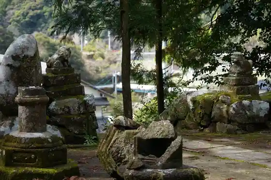
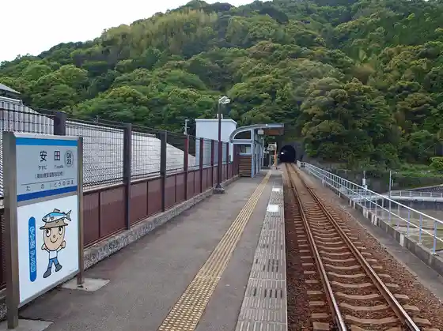
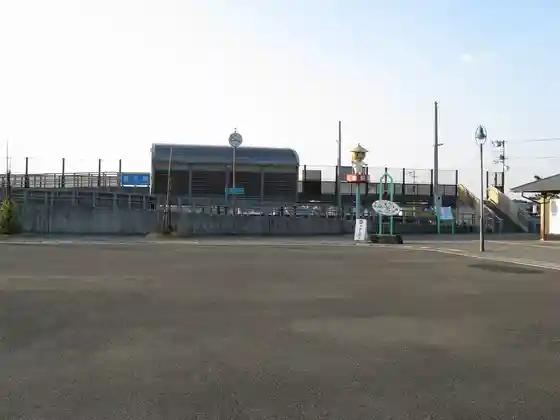

Yasuda, Kochi: things to do, food and stays
Yasuda · Kochi
Yasuda
Highlighted on the Kochi map.

Stay
Inakajikan
Dining
Aji Workshop Jinen
Resutoran Misaki
Doraibuin 27 Kami Mine Mise
Nozomi no Na Heri
Man Ryo
Sakana Teru Teru Rupoto Yasuda Mise
Experience
Kami Mine Tera Henro Sanpai
Sights
Shima Ishi Pikunikku Plaza
to Hama Kyukeijo

Bessho

Yasuda Eki

to Hama Eki

Yasuda Town Hall
Dai Gei Tonneru